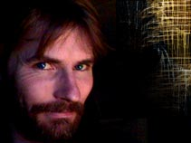

|
 "I create texture studies based on theoretical science or technical drawings using hidden lines of force, the paths drawn by quantum particle tracers from atom smashing, perhaps even a da Vinci drawing of a wing design. I apply lines these to virtual objects in computer-generated environmental spaces. I use virtual lighting to illuminate the objects and take virtual photographs of the resultant compositions. I end up with figurative abstracts which sometimes lead to animated pieces encompassing both motion and sound with themes reflecting my predilection to mingle science and religion." |